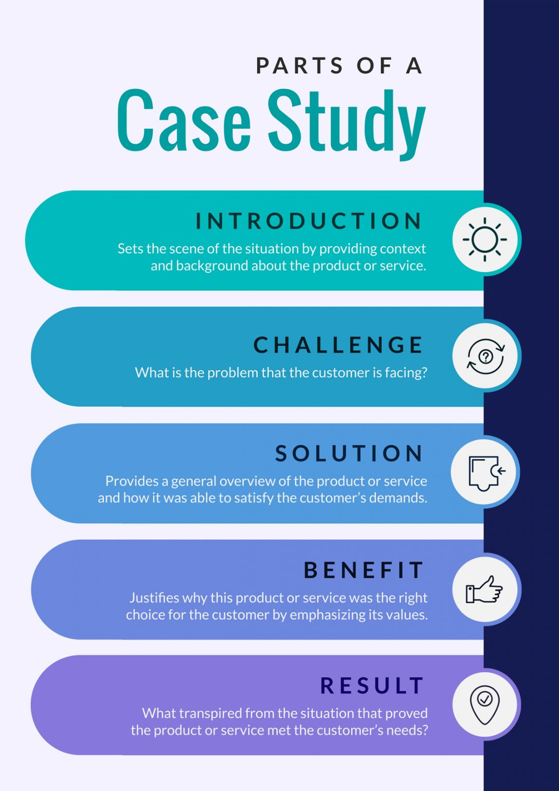

Improved Data Accessibility for Asrat Weldeyes Hospital
Aserat Weldeyes Hospital struggled with limited data accessibility, hindering their ability to generate meaningful insights. We implemented our data management platform, resulting in a 36% increase in data accessibility and a 44% improvement in workflow efficiency.
Read the Full Story
Enhanced Data-Driven Decision Making for Aserat Weldeyes Hospital
The hospotal lacked the tools to effectively analyze their data and make informed decisions. Our analytics and reporting solutions empowered them to gain valuable insights, leading to a 50% reduction in readmission rates.
Read the Full Story